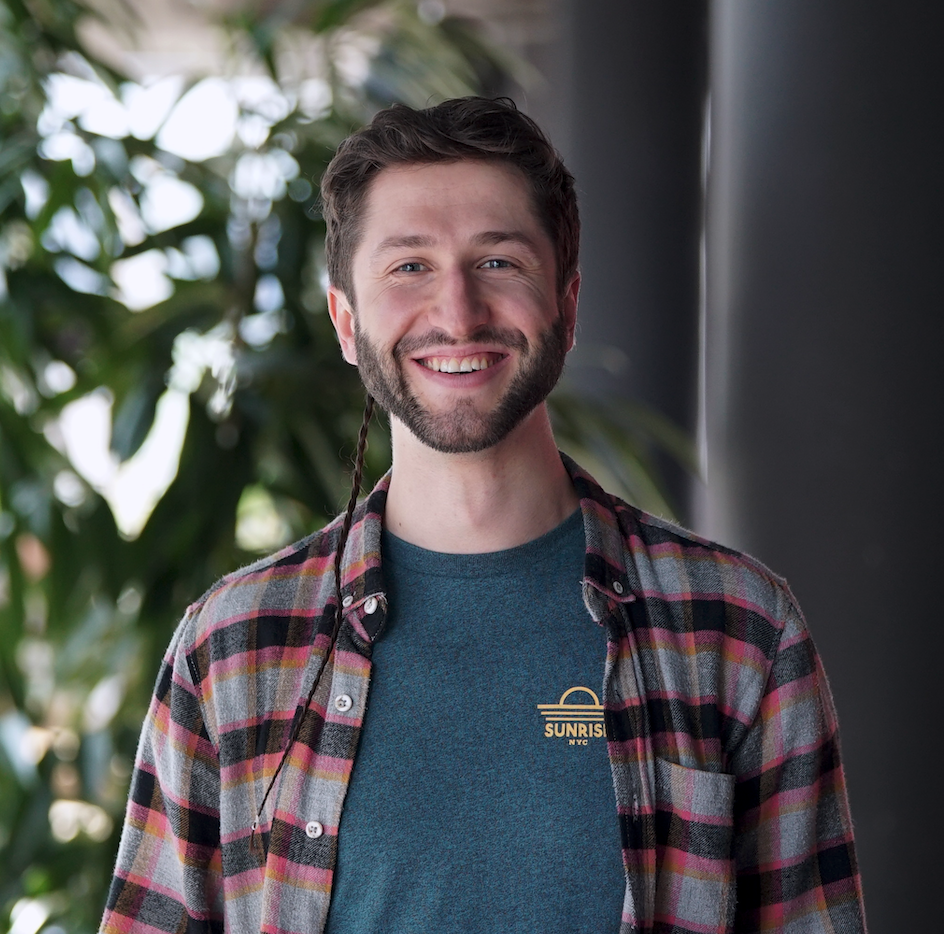

- Highlights
-
Understanding the big picture and taking care of the details, I turn ideas into software solutions. Throughout my experience I have taken a core part in designing and implementing multiple software systems from scratch and have brought them to life in production.
Having great peoples skills, I easily manage to organize work within the team and make the development moving, both in on-site and remote environments. I have been responsible for leading development teams of various sizes.
- 9+ yrs of experience with research, design and implementation of software systems
- 6+ yrs of production experience with Node.js and Microservices architectures
- 5+ yrs of experience with Docker and building CI/CD pipelines
- 2+ yrs of experience withing the blockchain and crypto space
- Tech skills
-
Node.js, Typescript, Bash, Rust, Solidity
Postgres, Redis, Mongo, Firestore, Multichain, Blockchain
Docker, Kubernetes, AWS, GoogleCloud
CI/CD, Github Actions, CircleCI, Bamboo
Distributed Systems, Event-Driven Systems, Microservices, Monoliths
- Experience
-
Senior Backend Engineer & DevOpsDeversiFi
04/2021 – present, remote
- Maintain and innovate the cloud infrastructure, CI/CD pipelines, monitoring and observability services of the system
- Integrations with L2 solutions and 3rd party providers of various crypto solutions
- R&D, system design and architecture solutions implementation
Senior Backend Engineer & Team LeadSTRV s.r.o.
03/2019 – 04/2021, Prague, Czech Republic / remote
- Lead a team of backend devs. Make sure the product is moving in the right direction and on time
- R&D, system design and architecture solutions implementation
- Consulting clients
- Design, develop and set up backend architectures and cloud infrastructures
Architecture & Infrastructure Consultant eSmiley A/S
03/2019 – 04/2020 (1y 1mo), remote
- Maintain the backend architecture and the underlying cloud infrastructure
- Cooperate with the on-site dev team on various backend-related issues
Lead Developer
08/2018 – 02/2019 (7 mo), Copenhagen, Denmark
- Guide, teach and support the tech team; Code reviews
- R&D System design solutions
- Maintain the systems' stability, CI/CD pipelines, cloud infrastructure
Backend Developer & DevOps
09/2016 – 07/2018 (1 yr 11 mo), Copenhagen, Denmark
- Zero-to-production setup of the backend architecture, the CI/CD pipeline and main part of the cloud infrastructure
- Design & implement a system with Microservice-Oriented architecture
- Propose, design, implement and document processes and specifications
Software Developer Coinfy ApS
09/2015 – 08/2016 (1 yr), Copenhagen, Denmark
- Core developer in creating Coinify's new crypto merchants payment API
- System design & development, Microservice architecture
Fullstack Developer, internship Code4business Software GmbH
09/2013 – 08/2014 (1 yr), Aachen, Germany
- Team lead for a small team of developers
- Develop & deploy new features for online shops
Student Software Developer ABiX ApS
04/2013 - 08/2013 (5 mo) and 02/2015 - 06/2015 (5 mo), Horsens, Denmark
- Recommended to the employer by a teacher of mine, I started working here as a developer, while studying my engineering degree
- Mentored another, lower semester student developer
- Education
-
MSc in Computer Science & Engineering Technical University of Denmark (DTU)
08/2016 - 06/2018, Copenahgen, Denmark
Major: Software Engineering
Thesis: Fault Tolerance of the Blockchain as a Distributed Database in a Commercial Context
Bachelor of ICT EngineeringVIA University College (VIA UC)
08/2011 - 06/2015, Horsens, Denmark
- Certificates & Side projects
-
- Smart Contract developer at Divei Prime (link here). Developed a Smart Contract in Solidity, based on the Ethereum network, for generating distributed, custom, private tokens.
- Redis Streams - a log data structure (link here)
- RediSearch - the Redis Search engine solution (link here)
- Volunteer work
-
- Mentor at "Hack Your Future"
- Volunteer at Danish People's Aid: Barista and trainer at Café Nutid, Copenhagen
- Ambassador of Microsoft at VIA UC
- Tutor and team leader at Tutor Society VIA UC